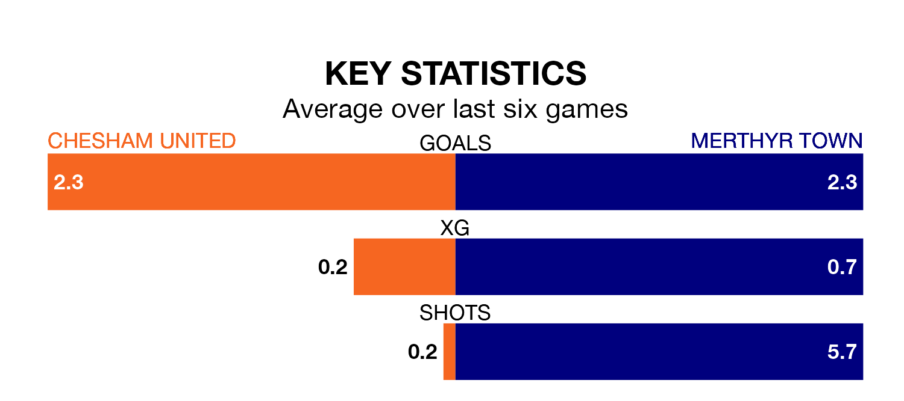

Chesham United host Merthyr Town in Tuesday's late match at the Meadow looking to bounce back from defeat last time out in Southern League Premier South.
Chesham, who sit top of the league after 27 games, fell to a 0-3 away defeat to Winchester City on Saturday.
They face a Merthyr side who also lost their last match, a 2-1 defeat to Gosport Borough, and who sit fourth in the table.
With 61 goals in 28 games so far this season, Merthyr are the league's highest scorers with 2.2 goals per game. And they are conceding fewer than average, letting in 39 goals at a rate of 1.4 per game.
Chesham are also above average scorers, with 2.1 goals per game, compared to a league average of 1.7. They have conceded 1.1 goals per game.
United are in fantastic form in Southern League Premier South, with five wins and a draw from their last six games.
With two wins and a draw over that period, Town's form is much worse – they have taken seven points from 18, compared to the hosts' 16.
In the last 10 years, Chesham and Merthyr have played each other on 13 occasions. Chesham won seven of them, Merthyr five, and they drew once.
On average, Chesham scored 2.2 goals and Merthyr 1.1 in those matches.
Their last meeting was on September 9, when Chesham won 3-1 away.
Updated: 10:01 (UTC), 06/02/24